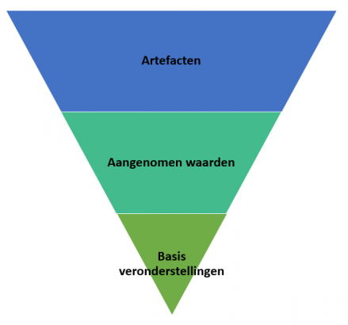

Algemene informatie over 3-lagenmodel
Dit model verdeelt de architectuur van een softwaretoepassing in drie afzonderlijke lagen, elk met zijn eigen verantwoordelijkheden en functies:
Toepassingslaag: Dit is de bovenste laag van het model en staat in direct contact met de eindgebruiker. De toepassingslaag is verantwoordelijk voor het weergeven van de gebruikersinterface (UI) van de applicatie en het verzamelen van invoer van de gebruiker. Het doel is om de interactie tussen de gebruiker en de applicatie mogelijk te maken. Dit kan de visuele elementen omvatten, zoals knoppen, tekstvakken, formulieren en grafische gebruikersinterfaces (GUI's).
Logische Laag : De logische laag bevindt zich tussen de toepassingslaag en de fysieke laag. Deze laag bevat de kernfunctionaliteit en de bedrijfslogica van de applicatie. Hier worden verwerking van gegevens, berekeningen, validaties en besluitvorming uitgevoerd. De logische laag fungeert als een tussenliggende component die de invoer van de gebruiker vanuit de toepassingslaag verwerkt en vervolgens de resultaten doorstuurt naar de fysieke laag of terug naar de Toepassingslaag.
LDe fysieke laag:De fysiekelaag is de onderste laag van het model en is verantwoordelijk voor het beheren van de gegevens die door de applicatie worden gebruikt. Dit omvat het ophalen, opslaan en bijwerken van gegevens in een database of andere gegevensopslagplaats. De gegevenslaag kan ook verantwoordelijk zijn voor gegevensvalidatie en beveiliging. Deze laag is vaak gekoppeld aan databasesystemen of externe gegevensbronnen.
Het doel van het drie lagen model voor software-architectuur is om de applicatie te structureren op een manier die modulair, onderhoudbaar en schaalbaar is. Elk van de lagen heeft een duidelijke set verantwoordelijkheden, waardoor ontwikkelaars en architecten de code gemakkelijker kunnen beheren en uitbreiden. Bovendien maakt dit model het mogelijk om wijzigingen in de ene laag uit te voeren zonder de andere lagen te beïnvloeden, waardoor de flexibiliteit en aanpasbaarheid van de software wordt vergroot. Het wordt vaak toegepast in softwareontwikkeling om complexe applicaties te ontwerpen en te implementeren.
de drie lagen van het drie lagen model
De toepassingslaag
De toepassingslaag: De toepassingslaag is de bovenste laag van het drie-lagenmodel en is belngrijk, omdat het verantwoordelijk is voor de gebruikers en de softwaretoepassingen.
De logischelaag
De logischelaag: De logische laag is de middelste laag en zit meestal tussen de toepassingslaag en de fysieke laag in. De logische laag is belangrijk, omdat het zorgt voor de implementatie voor de bedrijfslogica en functionaliteit van de applicatie.
De fysiekelaag
De Fysieke laag: De fysieke laag is de onderste laag van het model. Deze laag is verantwoordelijk voor het fysieke medium en de fysieke transmissie van gegevens over een communicatienetwerk.
Operatingsystem
Verdieping operating system
De taken van een operating system zijn: Berekeningen maken: De processor voert wiskundige en logische berekeningen uit, zoals optellen en vergelijken. Dit helpt bij het uitvoeren van taken en het maken van beslissingen. Gegevens beheren: Het slaat gegevens op en haalt ze op uit het geheugen (zoals RAM), wat nodig is voor programma's om te werken. Instructies volgen: Het leest en begrijpt instructies van programma's en voert ze in de juiste volgorde uit. Problemen oplossen: Het kan problemen detecteren en ermee omgaan, zoals fouten of speciale verzoeken van apparaten. Snel werken: Moderne processors zijn erg snel en kunnen meerdere taken tegelijkertijd uitvoeren, wat computers snel maakt. Kortom, een processor is als de "hersenen" van een computer. Het voert berekeningen uit, beheert gegevens en zorgt ervoor dat programma's correct werken.